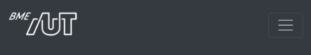

Labor 10 - Bootstrap 5¶
Bevezetés¶
Általános áttekintés a webes laborokról és formai követelmények a 8. labor bevezetőjében találhatók.
Az aktuális laborhoz tartozó jegyzőkönyv sablonja DOCX formátumban innen letölthető.
Előkészítés¶
- Hozzünk létre egy üres munkakönyvtárat!
- Töltsük le a kiinduló állományokat tartalmazó zip fájlt, majd csomagoljuk ki a létrehozott könyvtárba!
- Nyissuk meg a Visual Studio Code-dal a létrehozott könyvtárat (File -> Open Folder)!
- Indítsuk el a Terminal (Ctrl+ö vagy View > Integrated Terminal) ablakból a http-server-t:
http-server - Ellenőrizzük, hogy a megfelelő könyvtárban indítottuk-e el a szervert!
Laborfeladatok¶
A webfejlesztésben általános jelenség, hogy a designerek csak egy képet készítenek el, hogy a felületnek hogyan kell kinéznie, ami alapján el kell készíteni a megfelelő HTML és CSS kódot a fejlesztőnek.
A mai labor alkalmával egy ilyen képből (és egy kicsi HTML váz segítségével) kell az oldalt elkészíteni.
A designolás folyamán általában valamilyen keretrendszerből indulunk ki, mely kész megoldásokat ad a leggyakoribb feladatokra, így csökkentve az egyedi CSS mennyiségét. A Bootstrap két alapvető funkciót nyújt: - egységes formázás (gombok, színek) és grid alapú elrendezés kizárólag CSS-sel, - gyakori komponensek (felugró ablakok, kártyák, nyitható-zárható blokkok, kiemelések, panelek) CSS-sel és/vagy JavaScriptből.
A laboron ezekből a kész komponensekből fogunk megismerni egy párat közelebbről is.
Bootstrap hozzáadása egy HTML oldalhoz¶
Nyissuk meg az index.html fájlt, amit a labor során meg fogunk formázni.
Nézzük meg, hogy az oldal head-jében milyen állományokat és honnan töltünk be.
<head>
<meta charset="utf-8">
<meta name="viewport" content="width=device-width, initial-scale=1">
<title>MyBlog</title>
<!-- Bootstrap linkelése CDN-ről -->
<link rel="stylesheet" href="https://cdn.jsdelivr.net/npm/bootstrap@4.5.3/dist/css/bootstrap.min.css" integrity="sha384-TX8t27EcRE3e/ihU7zmQxVncDAy5uIKz4rEkgIXeMed4M0jlfIDPvg6uqKI2xXr2" crossorigin="anonymous">
<!-- Font awesome 5 CDN-ről (solid, regular és brand is) -->
<link rel="stylesheet" href="https://use.fontawesome.com/releases/v5.15.1/css/all.css" crossorigin="anonymous">
<!-- Google font (Muli) letöltése -->
<link href="https://fonts.googleapis.com/css?family=Muli" rel="stylesheet">
<!-- Saját CSS -->
<link rel="stylesheet" href="assets/css/site.css">
</head>
Figyeljük meg, hogy négy különbőző CSS állományt töltünk be, egy kivételével CDN-ről: 1. Az első magát a Bootstrap-et tölti be. 2. Ezt követően egy gyakran használt ikongyűjteményt, a Font Awesome-ot töltjük le. 3. Ezen felül, mivel egyedi betűtípust használunk, azt a Google fonts oldaláról töltjük le. 4. A legutolsó hivatkozás pedig az általunk készített CSS fájlt hivatkozza be.
A CSS és JS könyvtárakat többféleképpen is be tudjuk tölteni: - CDN-ről, publikus webről tölti le a CSS fájlt, amit most is használunk, - van lehetőségünk csomagkezelőt (npm, bower) használni letöltésre és magunk kiszolgálni a fájlt, - akár saját magunk kézzel is letölthetjük a megfelelő fájlokat, ebben az esetben is a saját webszerverünk szolgálja ki ezeket a fájlokat.
Ha az alkalmazás elrendezését szeretnénk megadni, elég sok boilerplate-jellegű CSS kódot kellene írnunk. A Bootstrap megközelítése, hogy a gyakori elrendezési lehetőségeket és stílusozási lehetőségeket készen és konfigurálhatóan adja nekünk.
A megvalósítanó oldal az alábbi főbb részekből áll: - navigációs sáv, - oldal központi eleme, ami blogbejegyzések listáját tartalmazza, - lábléc.
Navigációs sáv¶
A navigációs sáv felépítése legyen a következő (a HTML váz szerepel a kiinuló index.html-ben):
- bal szélen szerepeljen egy a BME AUT logo, ami az assets/img/logo-bme-aut.png útvonalon érhető el,
- ezt követően a két navigációs link: Home és Registration,
- a sáv jobb szélén pedig egy keresés szövegdoboz és egy Search feliratú gomb legyen.
A navigációs sáv az alábbiak szerint nézzen ki: - Magas felbontáson

Mivel a navigáció is egy gyakori probléma, a Bootstrap ad rá kész komponenst, a **navbar**t. A megvalósítás előtt nézzük meg, hogyan épül fel a Bootstrap navbar komponense. Az oldalon találunk kész HTML vázakat is, amiből ha a megfelelőt kiválasztva bemásoljuk a saját kódunkba, apró módosításokkal el tudjuk érni a megfelelő kinézetet.
A legfontosabb osztályok, amire a navbar épít:
- .navbar-brand brand logo megjelenítésére.
- .navbar-nav teljes magasságú egyszerű navigációs elemek megadásához (a legördülő lista is támogatott).
- .navbar-toggler mobil nézeten el lehessen rejteni a linkeket egy hamburger menü alá.
- .form-inline ha valamilyen form controlt szeretnénk a navigációs sávba tenni.
- .navbar-text ha függőlegesen középre igazított szöveget szeretnénk használni.
- .collapse.navbar-collapse elemek csoportos elrejtésére használható.
Érdemes keresni a dokumentációban egy ahhoz hasonló megjelenést amire nekünk is szükségünk van és az ott található HTML kódot átalakítani a saját igényeinknek megfelelően. - A sötét hátterú navbarhoz használjuk
navbar-darkésbg-darkosztályokat.
 Feladat 1: Navigációs sáv (0.5 pont)¶
Feladat 1: Navigációs sáv (0.5 pont)¶
Készítse el a fent ismertetett navigációs sávot Bootstrap 4 segítségével.
Az elkészült navigációs sávról illesszen be egy képernyőképet!
Reszponzív megjelenés¶
A navigációt is reszponzívan kell megvalósítani, tehát ha átmérezezzük az oldalt, akkor a navigációs menüpontokat el kell rejteni és egy úgynevezett hamburger menüt kell megjeleníteni helyette, amire kattintva megjelennek a menüpontok.
Még mielőtt nekiesnénk az egyedi megoldás kitalálására érdemes megnézni, hogy a Bootstrap támogatja ezt a funkcionalitást is, tehát csak a megfelelő HTML vázat kell kikeresni a Bootstrap navbar dokumentációjából és az alapján kiegészíteni a kódunkat. Tipp: navbar-toggler
A kész oldalnak így kell kinéznie. - Mobil eszközön zárva.
 - Mobil eszközön lenyitva

Feladat 2: Reszponzív navigációs sáv (0.5 pont)¶
- Tegye reszponzívvá a navigációs menüt a fenti képeknek megfelelően.
- Az elkészült teljes oldalról (ne csak a navigációs sávról) illesszen be egy-egy képernyőképet:
- mobil nézeten, ahol nincs lenyitva a hamburger menü,
- mobil nézeten, ahol le van nyitva a hamburger menü,
- nem mobil nézeten.
- Mekkora szélességnél vált mobil nézetre a menüsáv?
iMSc Feladat 2/b: Navigációs sávban szabályok felüldefiniálása (1 iMSc pont)¶
A navigációs menüben a linkek fehér színűek, hiszen a Bootstrap erre állítja be.
- Illesszen be egy képernyőképet a böngésző devTool (F12) ablakáról, amin látható, hogy milyen CSS osztály határozza meg most az egyes menüpontok (pl.: Home) betűszínét. Tipp: használja a Computed tabfület.
- Definiálja felül a Bootstrapben megadott menüpont színeket a site.css-ben úgy, hogy azok zöldek legyenek és ha egy menüpont fölé visszük az egeret, akkor váltson sötétzöldre. Az !important kulcsszót nem használhatja!
- A kész megoldásról csatoljon egy képernyőképet.
Egy kártya (blog bejegyzés) formázása¶
A navigáció után térjünk át a fő tartalmi elemre, a blog bejegyzésre. Először csak egy bejegyzést formázzunk meg. A blog post HTML váza már szerepel az index oldalon, ezt kell kiegészíteni a megfelelő Bootstrap osztályokkal és helyenként készíteni egy-egy CSS szabályt, amivel kiegészítjük a Bootstrap-es osztályokat.
A megoldáshoz használjuk a Bootstrap card-ját.
- Mivel majd több kártya kerül egymás mellé a szélességet a grid oszlopaihoz használt col-x segítségével adjuk meg.
- A kép igazításához használjuk a card-img-top oszátly
- A szöveges rész legyen a kártya törzse card-body
- A címhez a card-title osztályt használjuk
- Az egyéb adatok pedig a kártya láblécében card-footer jelenjenek meg
- a lábléc fölötti vonal legyen szaggatott,
- a betűméret 12px,
- a háttérszín átlátszó,
- a láblécben szereplő linkek legyenek szürkék és ha fölé visszük az egeret akkor zöldek, de ne legyen aláhúzva. Az ikonok mindig legyenek zöldek.
- Tipp: A lábléchez érdemes egyedi CSS osztály(oka)t is definiálni.
- Ügyeljen arra, hogy a margók és paddingok hasonlóak legyenek. Tipp: használja a m-0, py-2.... osztályokat. Részletesen a Bootstrap spacing szekcióban lehet róla olvasni.
Az egyes blog bejegyzéseknek, az alábbi képen látható módon kell megjelennie:

Feladat 3: Egy kártya formázása (1 pont)¶
- Illesszen be egy képernyőképet a teljes oldalról, amin látható az elkészített blogpost megformázva.
Reszponzív blog bejegyzés lista¶
Egészítse ki a HTML kódot úgy, hogy az oldalon összesen 6 blogbejegyzés jelenjen meg. Az egyes bejegyzések minden adata lehet azonos, csak a képeket cserélje le. A képeket az assets/img könyvtárban találja. Használja a Bootstrap által definiált alapértelmezetten 12 hasábos grid rendszert.
Az oldalt úgy valósítsa meg, hogy magas felbontáson 3 hasábos legyen, közepesen 2, kicsin pedig 1 hasábos.
- Magas felbontások

- Közepes felbontáson

- Kicsi felbontáson

Feladat 4: Reszponzív blog bejegyzés lista (1 pont)¶
- Illesszen be egy-egy képernyőképet mindhárom felbontáson, a teljes oldalról.
Oldal lábléc elkészítése¶
- A lábléc elkészítésekor a footerben egyedi CSS osztályban adja meg, hogy fekete legyen a háttér és fehér a betűszín.
- Ezen felül adjon meg megfelelő méretű paddingot, amihez használhajta a
p-4CSS osztályt illetve annak egyéb változatait. Részletes leírás a Bootstrap spacing fejezetben található. - A copyright szöveg kerüljön balra, az ikonok pedig jobbra. Ehhez a flexboxot használja.
- Ügyeljen arra, hogy az egyes ikonok mérete és távolsága is megfelelő legyen.

Feladat 5: Lábléc (0.5 pont)¶
- Illesszen be egy képernyőképet az elkészített láblécről.
iMSc: Lábléc igazítása az oldal aljára (0.5 iMSc pont)¶
Dolgozzon ki megoldást arra, hogy az oldal lábléce mindig a látható képernyő alján legyen.
- Akkor is ha az oldalon kevés a tartalom és akkor is ha scrollozni kell az oldalon
- Soha ne takarjon ki tartalmi részt.
- Tipp: a megoldáshoz használhatja a calc függvényt a magasság számításához, vagy akár a flexboxot is.
iMSc Feladat 5/b: Lábléc (0.5 pont)¶
Illesszen be egy-egy képernyőképet a teljes oldalról amikor azon kell scrollozni, illetve akkor is, amikor csak kevés tartalom van rajta. (A kevés tartalomhoz kommentezze ki a kártyák egy részét.)
Regisztrációs űrlap létrehozása¶
Az elkészített oldal tetején található egy Register feliratú link, ami a register.html oldalra irányít. A feladat ennek az oldalnak az elkészítése. Az oldal fejléc és lábléc része változatlan, tehát azt másolja át a meglévő index.html oldalról. Csak a navigáció utáni rész fog változni.
Az oldalon egy űrlapot kell készíteni, ahol a felhasználótó bekérjük a következő alábbi adatokat: Email cím, Password, Address, City, State (Tipp: select), ZIP.
Az űrlap végén legyen egy checkbox, hogy elfogaja a feltételeket illetve egy Sign in feliratű gomb, ami elküldi az űrlapot.
- Az inputok létrehozásánál ügyeljen mindig a megfelelő típus használatára.
- A szövegdobozokba tegyen placeholder szöveget is.
- Az alábbi képen látható elrendezést valósítja meg.

- Ellenőrizze, hogy az oldal kis képernyő méreten az alábbi elrendezésben jelenik-e meg. Ha nem, akkor javítsa a kódot, hogy az alábbi kinézetet kapja.

Feladat 6: Regisztrációs űrlap (1.5 pont)¶
- Illesszen be egy-egy képernyőképet az elkészített oldalról kicsi és magas felbontáson is.
iMSc Feladat 6/b: Regsztráció űrlap középre igazítása és placeholder design (0.5 pont)¶
- Flexbox segítségével igazítsa a regisztrációs űrlapot függőlegesen középre.
-
Definiálja felül a placeholder szövegek megjelenítését is. Legyen piros dőlt betű a placeholder mindenhol. Tipp:
::placeholder -
Illesszen be az elkészített teljes oldalról egy képernyőképet, ahol a placeholderek is láthatóak.